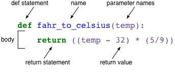

def fahr_to_celsius(temp):
return ((temp - 32) * (5/9))5 User Functions
- Questions:
- How can I re-use bits of my own code?
- Objectives:
- Create and use our own functions
- Compose our own functions from other functions we made
- Keypoints:
- Functions help us keep our programs concise and compact
- Functions make coding much easier by reducing debugging and allowing us to re-use code we’ve already written
In order to write concise readable and bug-free programs its a good idea to do as little coding as possible in a program. To this end we follow a principle called DRY - don’t repeat yourself! Meaning that we don’t re-write code that does the same stuff in mulitple places in a program, we put it in one place and refer to it from there. This is the basis of good programming
5.1 Building your own function
So we’d like a way to package our code so that it is easier to reuse and Python provides for this by letting us define our own functions. In use these work just like all the other functions we’ve already seen.
Let’s look at a user function by defining a function fahr_to_celsius that converts temperatures from Fahrenheit to Celsius:

The function definition opens with the keyword def followed by the name of the function (fahr_to_celsius) and a list of parameter names in brackets (temp). The parameter names are actually variables that carry the data given in the function call. The body of the function, the statements that are executed when it runs is indented below the definition line. The body concludes with a return keyword followed by the return value, the thing the function sends back to whatever called it.
When we call the function, the values we pass to it are assigned to those parameter variables so that we can use them inside the function. Inside the function, we use a return statement to send a result back to the code that asked for it.
Let’s try running our function.
fahr_to_celsius(32)0.0This command should call our function, using “32” as the input and return the function value.
In fact, calling our own function is no different from calling any other function:
print('freezing point of water:', fahr_to_celsius(32), 'C')
print('boiling point of water:', fahr_to_celsius(212), 'C')freezing point of water: 0.0 C
boiling point of water: 100.0 CWe’ve successfully called the function that we defined, and we have access to the value that we returned.
5.2 Composing functions
Now that we’ve seen how to turn Fahrenheit into Celsius, we can also write the function to turn Celsius into Kelvin:
def celsius_to_kelvin(temp_c):
return temp_c + 273.15
print('freezing point of water in Kelvin:', celsius_to_kelvin(0.))freezing point of water in Kelvin: 273.15What about converting Fahrenheit to Kelvin? We could write out the formula, but we don’t need to. Instead, we can compose the two functions we have already created:
def fahr_to_kelvin(temp_f):
temp_c = fahr_to_celsius(temp_f)
temp_k = celsius_to_kelvin(temp_c)
return temp_k
print('boiling point of water in Kelvin:', fahr_to_kelvin(212.0))boiling point of water in Kelvin: 373.15This is our first taste of how larger programs are built, we define basic operations, then combine them in ever-large chunks to get the effect we want.
5.3 Variables inside and outside Functions
The function is insulated from the rest of the program. Things that happen in there don’t affect what goes on elsewhere. Meaning we can re-use variable names inside the function that we used elsewhere without polluting them. Look what happens when the following piece of code is run
f = 0
k = 0
def f2k(f):
k = ((f-32)*(5.0/9.0)) + 273.15
return k
print( f2k(8) )
print( f2k(41) )
print( f2k(32) )
print(k)259.81666666666666
287.15
273.15
0k is 0 because the k inside the function f2k doesn’t know about the k defined outside the function.
5.4 Designing programs to use functions
It’s a good programming strategy to think about building functions into programs. Try to look for places where you’re doing the same set of commands over again - that would be a prime target for turning into a function. Think also about places where you could just refer to an operation by name - something like: count_gc for example. If you spot places like this its a good idea to put the code into a function since it will make your program more readable. When you find you’re re-using the same functions in mulitple programs, then you’re ready to start putting them in external files and re-using them from there.
5.5 Quiz
- “Adding” two strings produces their concatenation
'a' + 'b'is'ab'. Write a function calledfencethat takes two parameters calledoriginalandwrapperand returns a new string that has the wrapper character at the beginning and end of the original. A call to your function should look like this:
print(fence('name', '*'))- Note that
returnandprintare not interchangeable.printis a Python function that prints data to the screen. It enables us, users, see the data.returnstatement, on the other hand, makes data visible to the program.
Let’s have a look at the following function:
def add(a, b):
print(a + b)What will we see if we execute the following commands?
A = add(7, 3)
print(A)- If the variable
srefers to a string, thens[0]is the string’s first character ands[-1]is its last. Write a function calledouterthat returns a string made up of just the first and last characters of its input. A call to your function should look like this:
print(outer('helium'))- Rescaling an Array
Write a function rescale that takes a list as input and returns a corresponding list of values scaled to lie in the range 0.0 to 1.0.
(Hint: If L and H are the lowest and highest values in the original array, then the replacement for a value v should be (v-L) / (H-L). The max() function returns the biggest value in a list)
- Consider this code:
a = 3
b = 7
def swap(a, b):
temp = a
a = b
b = temp
swap(a, b)
print(a, b)Which of the following would be printed if you were to run this code? Why did you pick this answer?
7 33 73 37 7